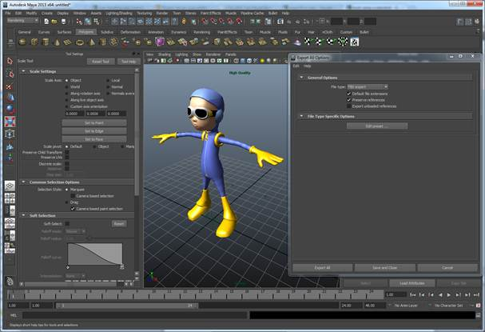
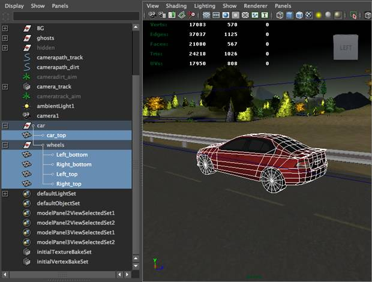

Development Guide
Contents
Overview
The gameplay framework is an open-source, cross-platform gaming framework that is designed to make it easy to learn to write 3-D mobile and desktop games using native C++. In this guide, we cover a top-down approach to teaching you the gameplay library, tools, and all the major parts of the APIs that are included in the framework. This guide covers a set of the C++ classes that you can use to write your games.
Design goals and considerations
In creating the gameplay framework, the goal was not only to focus on creating a high performance native C++ game framework, but also on a clean, simple, and elegant architecture. The framework uses a minimal set of cross-platform external dependencies and tries to take a minimalist approach to designing the classes. This approach allows you to learn from the classes in the library and extend the framework to build your own game engine or tools. The framework is a good starting block for learning how to write 3-D cross-platform mobile and desktop games, allowing you to spend more time designing your game.
Why write another game engine?
We actually hope it will be considered more of a gaming framework; however, in essence, it is really still just the core components of a game engine. There are several reasons why the gameplay framework was developed.
First, most modern 3-D game engines, while sometimes free or cheap, are closed source. Additionally, they usually have licensing fees. The gameplay framework is free, open-source software under the Apache 2.0 license. We want more people to learn about the fact that cross-platform is a reality and building a good base lets you move forward to writing game titles.
Secondly, a game engine is not only about rendering. Yes, it’s a huge part, but equally important are other aspects of game engines, such as audio, physics, animation, UI forms, particle emitters, scripting, and math. Searching on the web and trying to find information on how to fit these things into your game engine, or games, will likely scatter you across many different places, with the chance of gaps in your learning. This framework will hopefully bring it all together for you.
Lastly, mobile is hot! The gameplay framework will have a lot of emphasis on gaming on mobile devices. Today, mobile gaming is the largest growing sector of the game industry. Additionally, we still provide support for desktop platforms for both tooling and gaming. However, we think more focus should be on mobile gaming and learning how to write games that can easily target the cross-platform mobile sector.
Compiling framework
To build the gameplay library, tools, and samples as well as write your own games, you will have to install and use the platform specific tools listed below. These are the supported development environments for each specific operating system as a target platform.
|
Desktop OS |
Tool |
Development environment |
|
Microsoft Windows 7 |
Visual Studio 2010 |
Windows 7 |
|
Apple Mac OS X |
Xcode
4.3.2 |
Mac OS X |
|
Mobile OS |
Tool |
Development environment |
|
BlackBerry PlayBook OS 2.0 |
BlackBerry Native SDK 2.0 |
Windows 7, Mac OS X |
|
Android 2.3 |
Android NDK 7 |
Windows 7, Mac OS X |
|
iOS
5.1 |
Xcode
4.3.2 |
Mac OS X |
Project repository
Included in the project repository are the following notable folder and files:
|
Folder/Files |
Description |
|
/bin |
Precompiled
binary tools |
|
/external-deps |
External
dependency libraries |
|
/gameplay
|
The
gameplay library |
|
/gameplay-api |
Doxygen
API Reference |
|
/gameplay-docs
|
Documentation
guides and tutorials |
|
/gameplay-encoder
|
Game
asset/content encoding tool |
|
/gameplay-luagen |
Lua
script bindings generator tool |
|
/gameplay-template |
Game
samples template project files |
|
/gameplay-samples |
Game
samples |
|
gameplay.xcworkspace |
Xcode
workspace |
|
gameplay.sln |
Microsoft
Visual Studio solution |
|
gameplay-newproject.bat/.sh |
New
cross-platform project script |
Getting started on desktop
The quickest way to get started using the gameplay framework and tools is to simply start working in one of the desktop environments. You could use Microsoft Visual Studio 2010 Express, Professional on a Windows 7 operating system, or Xcode 4.3.2 on an Apple Mac OS X operating system. Then just open either the Microsoft Visual Studio solution or Xcode workspace, and build and run the projects. These solutions/workspaces are set up by default to build all the projects needed and to run the samples you have selected as active.
Voila! You now have one of several simple, interactive samples running on your desktop environment, which you can explore and become more familiar with.
Game samples
The gameplay-docs folder contains additional tutorial documentation for our gameplay-samples. These are intended to go into more detail for designing and coding games written using the framework. They all have a good starting point but have intentionally been left incomplete. This gives you the opportunity to change the samples, and complete them to make them more fun to interact and play with. They provide good building blocks and are a basis for you to explore various features in the framework. You can utilize code snippets from the samples to help speed up the development cycle in your own games.
API reference
We firmly believe in making a very intuitive set of APIs that are as straight-forward and as consistent as possible. However, all of the classes in the framework have been well documented with Doxygen formatting. The classes will be updated and improved iteratively throughout each release. This is to help you learn about what classes or sets of functions can be used and the recommended practices in using them.
You should consider reading the latest versions of the API reference from the pre-generated HTML Doxygen API documentation in the gameplay-api folder. This will give you a deeper understanding of the C++ gameplay framework.
Getting started on mobile
Now that you are up and running on one of the desktop environments, we recommend you take this seriously and go mobile! In today’s mobile game market, cross-platform development is a reality. It is quite simple and easy to use the gameplay framework to target a wider device audience. Start by downloading the native development kit for one of the various supported mobile operating system targets or set them all up.
Mobile setup instructions
Listed below are the basic setup instructions for downloading and installing the supported mobile platform and development environments for gameplay.
BlackBerry
Native SDK 2.0/10 Beta (PlayBook tablets and BlackBerry 10 devices)
- Download and install the BlackBerry Native
SDK 2.0 (for PlayBook) or BlackBerry
10 Beta (for BlackBerry 10 devices).
- Run
the QNX Momentics IDE (Eclipse CDT based) and
click
File > Import > Import Existing Projects. - Import
all the gameplay projects by selecting the repository project folder.
- Set
the active configuration to one of the Device-XXX or Simulator-XXX
profiles.
- Build
and run any of the game samples.
Apple Xcode 4.3.2 (iPad tablets and iPhone devices)
- Download and install Apple Xcode 4.
- Open
the gameplay.xc
workspace.
- Change
the active configuration to iOS Device, iPhone Simulator, or iPad Simulator.
- Build
and run any of the game samples.
Android
NDK 7 (Android tablets and devices)
- Download and install Android NDK 7, Android SDK, Apache Ant, and GNU Make for Cygwin.
- Setup
the Android SDK.
- Make
sure <android-sdk-path>/tools and <android-sdk-path>/platform-tools are added to PATH.
- Setup
the Android NDK
and follow
these instructions.
- Make
sure <android-ndk-path> is added to PATH.
- Install
Apache Ant.
- Make
sure <ant-path>/bin is added the PATH.
- Install
Cygwin
and select and add the package make:
The GNU version of the 'make' utility during installation.
- Rename
awk.exe to something else
(awk_.exe for example) in <android-ndk-path>/prebuilt/windows/bin.
This is to prevent the Android build system from being confused by the cygwin's awk.
- Build
the gameplay library using following steps:
- Open
the Cygwin terminal.
- Change
to the <gameplay-root>/gameplay/android
folder.
- Run
the following command to generate the needed files to build the project:
> android.bat update project -t 1 -p . -s - Run
the following command to build the gameplay library:
> ndk-build
<gameplay-root/gameplay-samples/sampleXX-XXXXX>/android folder.
- Run
the following command to generate the needed files to build the project:
> android.bat update project -t 1 -p . -s - Run
the following command to build the gameplay sample:
> ndk-build
Android NDK permissions errors:
If you see an error like "./obj/local/armeabi/libpng.a: No such file: Permission denied", make
sure that the "*.a" files have read permission by
running:
> chmod +r obj/local/armeabi/*.a
- Connect
the device and run the following command in the Cygwin
terminal to deploy the game:
> ant debug install
Note: If "ant debug install" does not work, ensure your device is being detected properly by running "adb devices". If no devices are reported, try downloading the correct USB drivers from you phone manufacturer's website. (OEM Drivers)
Ubuntu Linux
- sudo apt-get install cmake libglu1-mesa-dev libogg-dev libopenal-dev
- cd build
- cmake ..
- make
Mobile platform considerations
Ensure that you test early on the physical devices.
Depending on the type of game you want to write and on your design ideas, you’ll want to get some idea
of what type of performance you’ll
get with the game plan and prototypes you are working towards. Be careful and
do not to rely on desktop and mobile simulators as an indicator of performance
or mobile device capabilities.
Creating new projects
To create a new cross-platform game project, run the gameplay-newproject.bat/.sh script. The following is an example of running the gameplay-newproject.bat script:
1. Enter a name for the new project.
This name will be given to the project
executable and a folder with this name
will be created to store all project files.
Project name: test
2. Enter a game title.
On some platforms, this title is used to
identify the game during installation and
on shortcuts/icons.
Title: Test
3. Enter a short game description.
Description: Test Game
4. Enter a unique identifier for your project.
This should be a human readable package name,
containing at least two words separated by a
period (eg. com.surname.gamename).
Unique ID: org.gameplay3d.test
5. Enter author name.
On BlackBerry targets, this is used for
signing and must match the developer name
of your development certificate.
Author: My Company
6. Enter your game's main class name.
Your initial game header and source file
will be given this name and a class with
this name will be created in these files.
Class name: TestGame
7. Enter the project path.
This can be a relative path, absolute path,
or empty for the current folder. Note that
a project folder named test will also
be created inside this folder.
Path: gameplay-samples
1 file copied.
...
The simplest way to run the project on Windows is to add the Visual Studio project to the existing gameplay.sln solution, set the "gameplay" project as a dependency (right-click on the new project, click "Project Dependencies…", and select the "gameplay" project), and then build and run.
Similarly, the easiest way to run the project on BlackBerry is import the new project into a QNX Momentics IDE workspace that already contains the gameplay project, set the "gameplay" project as a dependency (right-click the new project, click "Properties", go to "Project References", and select the "gameplay" project), and then build and run. (Note: make sure that both projects are set to the same Build Configuration.)
To run the project on Mac, simply open the Xcode project and build and run.
To run the project on Android from Windows, use the steps described above for running the samples.
Assets and authoring
Game assets are extremely important for the quality of a good game. Not only do the game assets need to be fitted for the game design, but they also need to load as quickly as possible and at the highest quality within the platform hardware limitations.
Binary game assets
A very practical way to ensure that you’re being efficient is to always bundle and load all your game assets as binary formats. Common assets include images, fonts, audio, and 3-D scenes. Most game engines will always include some sort of authoring tool to allow developers to encode and process their content to be game-ready. The gameplay framework also includes an executable tool for this called the gameplay-encoder.
Using fonts and 3-D scenes
For fonts and 3-D scenes, you will want to support industry-standard file formats, such as TrueType for fonts and popular modern 3-D scene formats such as COLLADA and the FBX formats.
Although these formats are popular and have the widest support in tooling options, they are not considered efficient runtime formats. The gameplay library requires that you convert these formats to its documented gameplay bundle format (.gpb) using the gameplay-encoder executable.
Pre-built gameplay-encoder tool
The gameplay-encoder executable tool comes pre-built for Windows 7 and Mac OS X and can be found in the <gameplay-root>/bin folders. The general usage is:
>gameplay-encoder <options> files
Building gameplay-encoder
Even though the gameplay-encoder tool comes pre-built, you make want to customize it and built it again yourself. To build the gameplay-encoder project, open the gameplay-encoder project in Visual Studio or XCode and build the executable.
Building support for the FBX format
Although the FBX format is supported by the gameplay-encoder tools, FBX is not allowed to be re-distributed as part of our framework. However, it is free for you to use. Simply download the FBX SDK and then re-build the code in the gameplay-encoder using the USE_FBX preprocessor directive and ensure that you include the header and library paths in the project to the FBX SDK paths.
Content pipeline
The content pipeline for fonts and scenes works like this:
- Take
any TrueType fonts or COLLADA/FBX scene files.
- Run
the gameplay-encoder executable passing in the font or scene file path and
optional parameters to produce a gameplay binary version for the file (.gpb).
- Bundle
your game and include the gameplay binary file as a binary game asset.
- Load
any binary game assets using the gameplay::Bundle
class.
Using binary bundles
Use the gameplay::Bundle class from your C++ game source code to load your encoded binary files as bundles. The class offers methods to load both fonts and scenes. Scenes are loaded as a hierarchical structure of nodes, with various entities attached to them. These entities include things like mesh geometry or groups of meshes, and cameras and lights. The gameplay::Bundle class also has methods to filter only the parts of a scene that you want to load.
Release mode assets
When releasing your game title, all of the images should be optimized and converted to the compressed texture format that is supported by OpenGL (ES). Audio should be encoded to save space on storage.
Game
The gameplay::Game class is the base class for all your games created with the gameplay framework. You are required to extend this class using C++ and to override the core game and lifecycle event methods initialize, finalize, update, and render. This is where you’ll write your code to load the game assets and apply game logic and rendering code. Under the hood, the game class will receive events and act as an abstraction between the running game and the underlying platform layer that is running the game loop and reacting to operating systems.
There are four methods you must implement to get started in writing your own game:
#include "gameplay.h"
using namespace gameplay;
class MyGame : public Game
{
void initialize();
void finalize();
void update(float elapsedTime);
void render(float elapsedTime);
};
The Game::initialize() and Game::finalize() methods are called when the game starts up and shuts down, respectively. They are the methods to which you’ll add code to load your game assets and cleanup when the game has ended. The Game::update() and Game::render() methods are called once per frame from the game loop implemented in the gameplay::Platform for each operating system. This allows you to separate the code between handling updates to your game’s state and rendering your game’s visuals. You can use a variety of built-in classes to help with the game rendering.
Accessing the game instance
The gameplay::Game class can be accessed from anywhere in your game code. It implements a singleton design pattern. Call the static method Game::getInstance() to gain access to the instance of your game from any code.
Graphics and audio devices
After your game has started, the underlying graphics and audio devices will automatically initialize. This happens prior to the Game::initialize() method being called and readies any classes that use OpenGL (ES) 2.0 or Open AL 1.1. The graphics devices of your Game will be set up with a default 32-bit color frame buffer, a 24-bit depth buffer, and an 8-bit stencil buffer ready for your use. These are the active graphics hardware buffers, which are rendered into from your rendering code.
For more advanced usage, you can apply alternative frame buffers using the gameplay::FrameBuffer class. Immediately after the Game::render() method, the frame buffer is swapped/presented to the physical display for the user to see. You can invoke the Game::clear() method to clear the buffers through any of the methods. You can also call Game::renderOnce() from code, such as from the Game::initialize() method, to callback onto a method that will be called only once and then swapped/presented to the display. This is useful for presenting ad-hoc updates to the screen during initialization for rendering, such as loading screens.
Game sub-system controllers
The gameplay::Game class also manages game sub-system controllers, such as audio, animation and physics controllers, and provides access to them directly using getter methods. These classes act as controlling interfaces for managing and playing audio and animations that are active in the game, as well as updates to dynamics in the physics systems. These controllers are hosted by the gameplay::Game class and react on lifecycle events being handled in the game.
Game time and state
Once the instance of a gameplay::Game class has started, the game starts a running time. You can call the Game::getGameTime() to determine how long a game has been running. You can also call Game::getAbsoluteTime() to determine the absolute time that has elapsed since the first Game::run() call. This includes any paused time too. You can call the Game::pause() method and the game will be put into the Game::PAUSED state. If the user on the platform puts the game into the background, the game time is also paused. If the user puts the game back into the foreground, the game will invoke Game::play() and the game will resume. At any time in the game you can determine the game state by calling Game::getState(). The game state can be UNINITIALIZED, RUNNING or PAUSED.
Input and sensors
By creating your game and extending gameplay::Game, you’ll be able to add all the required handlers of input events. Additionally, there are methods on gameplay::Game to poll for the current sensor data. This architecture insulates you, as a developer, from the platform-specific details on handling keyboard, touch and mouse events, and from polling the accelerometer state. The following illustrates overridden methods to handle input events:
#include "gameplay.h"
using namespace gameplay;
class MyGame : public Game
{
...
void keyEvent(Keyboard::KeyEvent evt, int key);
void touchEvent(Touch::TouchEvent evt, int x, int y, unsigned int contactIndex);
bool mouseEvent(Mouse::MouseEvent evt, int x, int y);
void getAccelerometerValues(float* pitch, float* roll);
};
Handling input events
You have the opportunity, on either desktop platforms or mobile devices, to handle mouse events uniquely from the Game::touchEvent() method (this includes support for a Bluetooth enabled mouse). However, this is not required, and the default implementation of the Game::mouseEvent() method returns false, which means that the user can allow mouse events to be treated automatically as touch events.
You can decide to disable multi-touch support for games when you do not want this functionality. You can call Game::setMultiTouch() and pass in false to ensure that the platform treats and handles touch events as single touches.
You can also call Game::displayKeyboard() to show or hide a virtual keyboard for platforms that support it. You’ll want to integrate it into points in the game and user interfaces in the game where text input is required.
You can call Game::getAccelerometerValues() and pass in pointers to parameters that will be populated with the current sensor values for the accelerometer.
Sprites and fonts
Use the gameplay::SpriteBatch and gameplay::Font classes to integrate simple 2-D sprite and text rendering for both 2-D and 3-D games.
Binary encoding fonts
The first thing to do is to create or find a TrueType font that you want to use. There are a number of sites on the web that offer .TTF files to purchase, or tools to make them yourself.
Next, you’ll want to binary encode your TrueType font to a binary format via gameplay-encoder to produce a binary file. To do this run the following command with your gameplay-encoder executable:
> gameplay-encoder -s 28 airstrip.ttf
Drawing text and images
The following code sample illustrates how to render an image and text together:
void MyGame::initialize()
{
// Create your sprite batch and font and associate resources
_batch = SpriteBatch::create("res/image.png");
_font = Font::create("res/airstrip28.gpb");
}
void MyGame::render(float elapsedTime)
{
// Clear the frame buffer
clear(CLEAR_COLOR_DEPTH, Vector4(0, 0, 0, 1), 1.0f, 0);
// Draw your sprites (we will only draw one now
_batch->start();
_batch->draw(Rectangle(0, 0, WINDOW_WIDTH, WINDOW_HEIGHT),
Rectangle(0, 0, WINDOW_WIDTH, WINDOW_HEIGHT), Vector4::one());
_batch->finish();
// Draw the text at position 20,20 using red color
_font->start();
char text[1024];
sprintf(text, "FPS:%d", Game::getFrameRate());
_font->drawText(text, 20, 20, Vector4(1, 0, 0, 1), _font->getSize());
_font->finish();
}
void MyGame::finalize()
{
// Use built-in macros to clean up our resources.
SAFE_DELETE(_batch);
SAFE_RELEASE(_font);
}
Batch, batch, batch
You’ll notice that the gameplay::SpritchBatch and gameplay::Font code sequences above both have a common flow to them. The developer performs a call to start() followed by drawing operations and finishing with a call to finish(). This is to support batching or combining drawing operations into a single hardware rendering call.
Scene and nodes
At the heart of any game is a visual scene. Using the gameplay::Scene class, you can create and retain a rich 3-D scene for organizing visual, audio, animation and physics components in your game.
The gameplay::Scene class is based on a hierarchical data structure that is often referred to as a scene graph. Using the gameplay::Scene and gameplay::Node classes, you can build up a game level by attaching various game components to the nodes in the scene. The node will maintain the transformation for any attachments. As a basic example, a scene might have two nodes. The first node could have a gameplay::Camera attached to it and the second node could have a gameplay::Model attached to it. The gameplay::Scene will have the camera set as the active camera. You could then transform either/both of the nodes to change the player’s perspective on what they will see in the game.
There are a variety of components you can attach to the gameplay::Node
class:
|
Component |
Description |
|
gameplay::Model |
Used to represent the mesh/geometry
in the scene. |
|
gameplay::Camera |
Used to represent a view/perspective
into the scene. |
|
gameplay::Light |
Used to hold lighting information
that can affect how a Model
is rendered. |
|
gameplay::PhysicsCollisionObject |
Used to define the basic physics
dynamics that will be simulated. |
|
gameplay::ParticleEmitter |
Used to represent smoke, steam, fire
and other atmospheric effects. |
|
gameplay::AudioSource |
Use to represent a source where audio
is being played from. |
A typical flow will have you loading/building a large scene representing all the components needed in the game level. This is done once during Game::initialize(). For every call to the Game::update() method, the code will update changes to the nodes and attached components based on events such as user input . Then the application will traverse the scene and render the parts in the scene that are visible from scene's active camera.
Exporting a 3-D scene from Autodesk Maya/Max
If you want to export 3-D scenes, use the native FBX Export (for FBX) or DAE_FBX Export (for COLLADA).

Exporting a 3-D scene from Blender
Blender supports exporting to the COLLADA and FBX file formats.
·
File >
Export > Autodesk FBX (.fbx)
·
File
> Export > COLLADA (.dae)
If you run into problems when using COLLADA files from Blender, try re-importing the COLLADA file back into Blender or Maya software to see if there is a problem with the exported model.
Binary encoding a scene
Run gameplay-encoder with no arguments to see the usage information and supported arguments.
Usage: gameplay-encoder [options] <filepath>
Example
Convert the COLLADA file duck.dae into gameplay binary file duck.gpb.
> gameplay-encoder duck.dae
Encoding an FBX file
To convert an FBX file to a gameplay binary file, you must install the FBX SDK and set the preprocessor directive USE_FBX. See the instructions in the gameplay-encoder README on GitHub.
Loading a scene
Using the gameplay::Bundle class, you can load either an entire scene or various parts of a scene into any existing scene. The gameplay::Bundle parses the binary file and de-serializes the objects from the file so that you can use them in your game.
Here is an example of loading a simple scene containing a model of a duck, a light, and a camera from a gameplay binary file:
void MeshGame::initialize()
{
// Load the scene from our gameplay binary file
Bundle* bundle = Bundle::create("res/duck.gpb");
Scene* scene = bundle->loadScene();
SAFE_RELEASE(bundle);
// Get handles to the nodes of interest in the scene
_modelNode = scene->findNode("duck");
Node* _lightNode = scene->findNode("directionalLight1");
Node* _cameraNode = scene->findNode("camera1");
// More initialization ...
}
Updating a scene
After handling input events or polling the sensors, it’s time to update the scene. It is very important to understand the scene representing your game level. We always want to update things that are impacted by the changes to optimize performance. In order to optimize the performance of your game, it is essential that you only update objects that need to be changed. In this example, we’ll apply a rotation when the user has touched the screen or mouse button:
void MyGame::update(float elapsedTime)
{
// Rotate the model
if (!_touched)
_modelNode->rotateY(elapsedTime * MATH_DEG_TO_RAD(0.05f));
}
}
Some examples of typical things you will want to update in your scene may include:
·
applying forces or impulses onto rigid
bodies
·
applying transformations
·
starting or stopping animations
·
showing or hiding components
Rendering a scene
To render a scene you’ll need to gather all the models in the scene that are attached to nodes and then draw them. Calling the Scene::visit() method, the scene's hierarchical data structure is traversed and for each node in the scene, the specified method is invoked as a callback.
void MyGame::render(float elapsedTime)
{
// Clear the buffers to black
clear(CLEAR_COLOR_DEPTH, Vector4::zero(), 1.0f, 0);
// Visit all the nodes in the scene, drawing the models/mesh.
_scene->visit(this, &MeshGame::drawScene);
}
bool MyGame::drawScene(Node* node, void* cookie)
{
// This method is called for each node in the scene.
Model* model = node->getModel();
if (model)
model->draw();
return true;
}
Culling non-visible models
In some scenes, you may have many models contributing to the game level. However, with a moving camera, only some models will be visible at any particular time. Running the code in the snippet above on much larger scenes would cause many models to be drawn unnecessarily. To avoid this, you can query a gameplay::Node class and retrieve a gameplay::BoundingSphere using Node::getBoundingSphere(). This bound represents an approximation of the representative data contained within a node. It is only intended for visibility testing or first-pass intersection testing. If you have a moving camera with many objects in the scene, ensure that you add code to test visibility from within your visitor callback. This will ensure the node is within the camera’s viewing range. To do this, make a simple intersection test between the front of each node and the active camera frustum (by calling Camera::getFrustum()) that represents the outer planes of the camera’s viewing area. Here is a snippet of code to perform such an intersection test:
bool MeshGame::drawScene(Node* node, void* cookie)
{
// Only draw visible nodes
if (node->getBoundingSphere()->intersect(_camera->getFrustum())
{
Model* model = node->getModel();
if (model)
model->draw();
}
return true;
}
Model and mesh
The gameplay::Model class is the basic component used to draw geometry in your scene. The model contains a few key elements: a gameplay::Mesh, an optional gameplay::MeshSkin and one or more gameplay::Material. These contribute to the information that is needed to perform the rendering of a model.
Mesh geometry
The gameplay::Mesh class consists of a gameplay::VertexFormat attribute. This attribute describes the layout for the vertex data as well as the actual vertex data, which is used as input in the rendering of the geometry. In addition, it holds one or more gameplay::MeshParts. These parts define the primitive shapes and indices into the vertex data that describe how the vertices are connected.
Game artists use 3-D modeling tools that are capable of organizing and splitting the vertex data into parts/subsets based on the materials that are applied to them. The gameplay::Mesh class maintains one vertex buffer to hold all the vertices, and for each gameplay::MeshPart, an index buffer is used to draw the primitive shapes.
MeshSkin and Joints
The gameplay::Mesh class supports an optional gameplay::MeshSkin. This is used when loading models that represent characters in the game that have a skeleton consisting of gameplay::Joint objects (bones). Vertex skinning is the term used to describe the process of applying a weighting or relationship with the Joints and their affected vertices. Using 3-D modeling tools, artists can add this additional weighting information onto the vertices in order to control how much a particular vertex should be impacted. This is based on the transformation of joints that can affect them. You will learn later how to apply special, skinned Materials that support this weighting. The gameplay 3-D framework supports a maximum of four blend weights per vertex. The gameplay::MeshSkin class holds and maintains a hierarchy of gameplay:Joint objects that can be transformed. A typical operation is to animate the transformation (usually only rotations) of the joints. The data within this class can be bound onto skinned Materials to ensure proper impact of weights onto their influenced vertices.
Lights
The gameplay::Light class can be attached to any gameplay::Node in order to add lighting information into a gameplay::Scene. This lighting information must be bound to the gameplay::Material that is being applied onto the gameplay::MeshParts. There are three types of lights in the gameplay 3-D framework - directional, point, and spot lights.
All gameplay::Light components can be loaded into a gameplay::Scene using the gameplay::Bundle class. However, it is your responsibility to bind the relevant lighting information stored in the light into the gameplay::Material class.
You can also programmatically create a light using the
factory methods on the gameplay::Light class. Here is an example of
how to create and add a directional light to your scene and bind the lighting
information onto a model's material(s):
void MyGame::initialize()
{
...
// Create a node and light attaching the light to the node
Node* lightNode = Node::create("directionalLight1");
Light* light = Light::createDirectional(Vector3(1, 0, 0));
lightNode->setLight(light);
// Bind the relevant lighting information into the materials
Material* material = _modelNode->getModel()->getMaterial();
MaterialParameter* parameter = material->getParameter("u_lightDirection");
parameter->bindValue(lightNode, &Node::getForwardVectorView);
}
Pre-computed lighting maps
Adding lighting information into gameplay::Material adds computationally expensive graphics computations. In many games, there are usually multiple static lights and objects in the scene. In this relationship, the additive light colors contributing to the objects can be pre-computed during the design phase. 3-D modeling tools typically support the ability to compute the light's additive color contributions using a process called baking. This process allows the artist to direct the contributing light and color information into a separate or combined texture so that this is not required during the rendering.
You can optionally declare and
pass in pre-generated light maps using the colored-unlit.frag/textured-unlit.frag shaders and specifying in your materials
defines =
TEXTURE_LIGHTMAP
Then you just assign them using the sampler m_lightmapTexture in
your material definition to the image that was pre-generated that contains the light+color for your object. It is recommended to use 8-bit
alpha textures to reduce the size.
Directional lights
In most games, you’ll want to add a gameplay::Light class whose type is Light::DIRECTIONAL. This type of light is used as the primary light source, such as a sun or moon. The directional light represents a light source whose color is affected only by the constant direction vector. It is typical to bind this onto the gameplay::Materials of objects that are dynamic or moving.
Point and spot lights
Due to the expensive processing overhead in using point and spot lights, many games are designed to restrict point and spot light use to be static, baked into light and color maps. However, the point and spot light types add exceptional realism to games. Using them in separate or combined rendering passes, you can bind point and spot lights into material to add dynamic point and spot light rendering. All the built-in gameplay .materials files support directional, point and spot lights. Also, with minor modification to the shaders, you can add additional passes to combine two or more lights. It should be noted that there is a significant performance impact in doing this. For these cases, you’ll usually want to restrict the influence of lights on a material to no more than the one or two closest lights at a time. This can be achieved by using a simple test in the Game::update() method to find the closest light to a gameplay::Model and then bind them to the gameplay::Material once they are found.
Materials and shaders
The gameplay 3-D framework uses a modern GPU shader based rendering architecture and uses OpenGL 2.0+ (desktop) or OpenGL ES 2.0 (mobile) along with the OpenGL Shading Language (GLSL). Currently, all the code in graphics-related classes uses the OpenGL hardware device directly.
Using materials
The gameplay::Material class is the high level definition of all the rendering information needed to draw a gameplay::MeshPart. When you draw a gameplay::Model, the mesh’s vertex buffer is applied and for each gameplay::MeshPart its index buffer(s) and gameplay::Materials are applied just before the primitives are drawn.
RenderState and Effects
Each gameplay::Material consists of a gameplay::RenderState and a gameplay::Effect. The gameplay::RenderState stores the GPU render state blocks that are to be applied, as well as any gameplay::MaterialParameters to be applied to the gameplay::Effect. While a gameplay::Material is typically used once per gameplay::MeshPart, the gameplay::Effect is created internally based on the unique combination of selected vertex and fragment shader programs. The gameplay::Effect represents a common reusable shader program.
Techniques
Since you can bind only one gameplay::Material per gameplay::MeshPart, an additional feature is supported
that's designed to make it quick and easy to change the way you render the
parts at runtime. You can define multiple techniques by giving them different
names. Each one can have a completely different rendering technique, and you
can even change the technique being applied at runtime by using Material::setTechnique(const
char* name). When a material is loaded, all the techniques are loaded
ahead too. This is a practical way of handling different light combinations or
having lower-quality rendering techniques, such as disabling bump mapping, when
the object being rendered is far away from the camera.
Creating materials
You can create a gameplay::Material from
the simple gameplay::Properties based
.material files. Using this simple file format, you can define your material,
specifying all the rendering techniques and pass information.
Here is an example of loading a .material file:
Material* planeMaterial = planeNode->getModel()->setMaterial("res/floor.material");
Setting vs. binding material parameters
Once you have created a gameplay::Material
instance, you’ll want to get its parameters
and then set or bind various values to them. To set a value, get the gameplay::MaterialParameter and then call the appropriate setValue()
method on it. Setting material parameter values is most common in parameters
that are based on values that are constants.
Here is an example of setting a value on a parameter:
material->getParameter("u_diffuseColor")->setValue(Vector4(0.53544f,
0.53544f,
0.53544f, 1.0f));
For values that are not constants and are determined from
other objects, you’ll
want to bind a value to it. When binding a value, you are giving the parameter
a function pointer that will only be resolved just prior to rendering. In this
example, we will bind the forward vector for a node (in view space).
Here is an example of binding a value on a parameter:
material->getParameter("u_lightDirection")->bindValue(lightNode,
&Node::getForwardVectorView);
.material files
As you can see in the following .material file, we have one
Material, one Technique and one Pass. The main parts
of this material definition are the shaders, uniforms, samplers and renderState. You will see certain upper case values
throughout the file. These represent constant enumeration values and can
usually be found in the gameplay::RenderState or gameplay::Texture class
definitions:
material duck
{
technique
{
pass 0
{
// shaders
vertexShader = res/shaders/textured.vert
fragmentShader = res/shaders/textured.frag
defines = SPECULAR
// uniforms
u_worldViewProjectionMatrix = WORLD_VIEW_PROJECTION_MATRIX
u_inverseTransposeWorldViewMatrix = INVERSE_TRANSPOSE_WORLD_VIEW_MATRIX
u_cameraPosition = CAMERA_WORLD_POSITION
// samplers
sampler u_diffuseTexture
{
path = res/duck-diffuse.png
mipmap = true
wrapS = CLAMP
wrapT = CLAMP
minFilter = NEAREST_MIPMAP_LINEAR
magFilter = LINEAR
}
// render state
renderState
{
cullFace = true
depthTest = true
}
}
}
}
Built-in shaders
The <gameplay-root>/gameplay/res/shaders directory contains a set of the most common shaders used in your games. To reduce shader code duplication the gameplay framework also supports declaring including of shader files within vertex and shader program files.
If there is an error compiling the shaders the expanded shader without the definitions is output with an .err file extension in the same directory where the file was loaded from.
Example:
#include "lib/lighting.frag"
Shader preprocessor definitions
Using preprocessor definitions, the built-in shaders support various features. Adding certain shader definitions (defines=XXX) will require use specific uniform/samplers ‘u_xxxxxxx’. You must set these in your vertex stream in your mesh and/or material parameters.
Property inheritance
When making materials with multiple techniques or passes,
you can put any common things, such as renderState or
shaders, above the material or technique definitions. The gameplay::Property file
format for the .material files supports property inheritance. Therefore, if you
put the renderState in the material sections, then
all techniques and passes will inherit its definition.
Particle emitters
The gameplay::ParticleEmitter class
defines all the information needed to simulate and render a system of
particles. The emitter can be defined in various ways to represent smoke,
steam, fire and other atmospheric effects, such as rain and lightning. Once
created, the emitter can be set on a gameplay::Node in
order to follow an object, or it can be placed within a scene.
Particles as sprites
A gameplay::ParticleEmitter
always has a sprite/texture and a maximum number of particles that can be alive
at any given time. After the emitter is created, these cannot be changed.
Particles are rendered as camera-facing billboards using the emitter's
sprite/texture. The emitter's sprite/texture properties determine whether the
texture is treated as a single image, a texture atlas, or an animated sprite.
Particle properties
A gameplay::ParticleEmitter also
has a number of properties that determine values assigned to the individual
particles it emits. Scalar properties, such as particle begin- and end-size,
are assigned within a minimum and a maximum value; vector properties are
assigned within the domain or space, and are defined by a base vector and a
variance vector.
The variance vector is multiplied by a random scalar between
1 and -1, and the base vector is added to this result. This allows an emitter
to be created, which emits particles with properties that are randomized, yet
fit within a well-defined range. To make a property deterministic, simply set
the minimum value to the same value as the maximum for that property, or set
its variance to a zero vector. To learn more about different scalars, vector
and rendering properties that can be set on a gameplay::ParticleEmitter, look at the C++ API.
Creating particle emitters
Use the ParticlEmitter::create() method to create an emitter from a
particle file. The .particle file format and semantics are very similar to the
.material file format. This is because it also leverages the gameplay::Properties file
definition and supports all the properties supported in the C++ API for the gameplay::ParticleEmitter class.
Animated sprites for particles
It is very easy to make the particles animate through a list
of images. Just make your images have a tile of sprite images and then modify
the sprite’s base properties in the emitter
to control the animation behavior.
You can then even do things such as animate images of 3-D
dice using only 2-D images.
Physics
The gameplay framework supports 3-D physics using the game
service/controller gameplay::PhysicsController. The gameplay::PhysicsController class maintains a physics world
that has gravity, and will simulate the objects you add to it.
The gameplay physics system supports 3-D rigid body
dynamics, including collision shapes, constraints, and a physics character
class. To simulate objects within the physics world, you need to create a gameplay::PhysicsCollisionObject object representing the
geometry, or gameplay::Model. By attaching a collision
object to a gameplay::Node, the rigid body will be added
to the physics world and the simulation will automatically update the node’s transformation.
PhysicsCollisionObject
PhysicsCollisionObject is
the base class that provides an interface for receiving collision events.
You can add collision listeners to a PhysicsCollisionObject or
test if the collision object currently collides with another collision object.
There are 3 types of collision objects:
·
PhysicsRigidBody
·
PhysicsGhostObject
·
PhysicsCharacter
PhysicsRigidBody
A rigid body is an idealized, infinitely hard, non-deformable
solid object. Rigid bodies have mass, shape and other properties that affect
forces within the simulation.
A PhysicsRigidBody can
be set to be a kinematic rigid body. A kinematic rigid body is an object that
is not simulated by the physics system, and instead has its transform driven
manually.
Create a PhysicsRigidBody
To create a rigid body, first you need to know what kind of
shape you want to simulate. The physics system supports boxes, spheres, meshes,
capsules, and terrain height fields. For basic shapes, such as boxes and
spheres, you can programmatically create the rigid bodies by calling Node::setCollisionObject() and passing in the desired shape type.
PhysicsRigidBody::Parameters params;
params.mass = 10.0f;
node->setCollisionObject(PhysicsCollisionObject::RIGID_BODY,
PhysicsCollisionShape::box(), ¶ms);
All other types of rigid bodies must be created using the .scene and .physics
property definition files. The .scene file
allows you to bind various attachments or properties to nodes, including a
rigid body.
For example, to create a mesh rigid body for the node within
the scene with ID equal to tree_1:
game.scene:
scene
{
...
node tree_1
{
...
collisionObject = game.physics#tree_mesh
}
...
}
game.physics:
collisionObject tree_mesh
{
type = RIGID_BODY
shape = MESH
mass = 15.0
...
}
RigidBody schema
All properties have default values if not defined. See PhysicsRigidBody::Parameters for
more information.
collisionObject <string>
{
type = <RIGID_BODY | GHOST_OBJECT | CHARACTER>
shape = <BOX | SPHERE | MESH | HEIGHTFIELD | CAPSULE>
image = <string> // only for HEIGHTFIELD
radius = <float>
height = <float>
extents = <float, float, float>
center = <float, float, float>
centerAbsolute = <float, float, float>
mass = <float>
friction = <float>
restitution = <float>
linearDamping = <float>
angularDamping = <float>
kinematic = <bool>
anisotropicFriction = <float, float, float>
gravity = <float, float, float>
}
|
Shapes |
Properties |
|
BOX |
extents, center, center-absolute |
|
SPHERE |
radius, center, center-absolute |
|
MESH |
|
|
HEIGHTFIELD |
image |
|
CAPSULE |
radius, height, center, center-absolute |
PhysicsGhostObject
A ghost object is like a rigid body except that it does not
have an effect the simulation. It will not cause forces or react to the other
rigid bodies. Ghost objects have a shape but they do not have mass, or any of
the properties that affect forces.
Ghost objects are useful for querying the simulation, or
detecting collisions without having rigid bodies react to the ghost object. A
ghost object could be used to detect if an object entered a volume, such as a
soccer ball going into a goal. This use of a ghost object is often called a
volumetric trigger. Ghost objects can also detect if they collide with other
ghost objects.
Collision objects do not require a model so you could use a
ghost object to check if a camera collides with a wall.
Creating a PhysicsGhostObject
Programmatically:
// Create a ghost object with radius 5
node->setCollisionObject(PhysicsCollisionObject::GHOST_OBJECT,
PhysicsCollisionShape::sphere(5.0f));
In a .physics file:
collisionObject powerup
{
type = GHOST_OBJECT
shape = SPHERE
radius = 5.0
}
PhysicsGhostObject schema
Ghost objects only have a shape and support the same shapes
as rigid bodies.
collisionObject <string>
{
type = GHOST_OBJECT
shape = <BOX | SPHERE | MESH | HEIGHTFIELD | CAPSULE>
radius = <float>
height = <float>
extents = <float, float, float>
center = <float, float, float>
centerAbsolute = <float, float, float>
image = <string> // HEIGHTFIELD shapes only.
}
PhysicsCharacter
The PhysicsCharacter class
can be used to control the movements and collisions of a character in a game.
It interacts with the physics system to apply gravity and handle collisions,
however dynamics are not applied to the character directly by the physics
system. Instead, the character's movement is controlled directly by the PhysicsCharacter
class. This results in a more responsive and typical game character than would
be possible if trying to move a character by applying physical simulation with
forces.
Creating a PhysicsCharacter
To programmatically create a PhysicsCharacter with
mass 20 and capsule shape:
PhysicsRigidBody::Parameters params(20.0f);
node->setCollisionObject(PhysicsCollisionObject::CHARACTER,
PhysicsCollisionShape::capsule(1.2f, 5.0f,
Vector3(0, 2.5, 0), true),
¶ms);
PhysicsCharacter* character = static_cast<PhysicsCharacter*>(
node->getCollisionObject());
PhysicsCharacter schema
Physics characters have a mass and shape. A capsule is a typical
shape for a typical biped character.
collisionObject <string>
{
type = CHARACTER
shape = <BOX | SPHERE | MESH | CAPSULE>
radius = <float>
height = <float>
extents = <float, float, float>
center = <float, float, float>
centerAbsolute = <float, float, float>
mass = <float>
}
Creating a PhysicsContraint
The gameplay framework supports various types of constraints
between two rigid bodies (or one rigid body and the physics world), including
hinge, fixed, generic (six-degree-of-freedom), socket, and spring. Constraints
can be created programmatically using one of the create functions on gameplay::PhysicsController, or they can be specified
within the physics section of the .scene file.
For example, to create a hinge constraint from within a .scene file
between the rigid body attached to the node with id
door and the physics world:
game.scene:
scene
{
...
physics
{
...
constraint
{
type = HINGE
rigidBodyA = door
rotationOffsetA = 0.0, 1.0, 0.0, 90.0
translationOffsetA = 0.0, 0.0, 2.0
limits = 0.0, 90.0, 0.5
}
}
}
PhysicsConstraint schema
constraint <string>
{
type = <FIXED | GENERIC | HINGE | SOCKET | SPRING>
rigidBodyA = <string>
rigidBodyB = <string>
translationOffsetA = <float, float, float>
translationOffsetB = <float, float, float>
rotationOffsetA = <float>
rotationOffsetB = <float>
angularLowerLimit = <float, float, float>
angularUpperLimit = <float, float, float>
linearLowerLimit = <float, float, float>
linearUpperLimit = <float, float, float>
limits = <float, float, float>
angularDampingX = <float>
angularDampingY = <float>
angularDampingZ = <float>
angularStrengthX = <float>
angularStrengthY = <float>
angularStrengthZ = <float>
linearDampingX = <float>
linearDampingY = <float>
linearDampingZ = <float>
linearStrengthX = <float>
linearStrengthY = <float>
linearStrengthZ = <float>
breakingImpulse = <float>
}
|
Constraint Types |
Properties |
|
FIXED |
|
|
GENERIC |
translationOffsetA,
translationOffsetB, rotationOffsetA,
rotationOffsetB, angularLowerLimit,
angularUpperLimit, linearLowerLimit,
linearUpperLimit |
|
HINGE |
translationOffsetA,
translationOffsetB, rotationOffsetA,
rotationOffsetB, limits |
|
SOCKET |
translationOffsetA,
translationOffsetB |
|
SPRING |
translationOffsetA,
translationOffsetB, rotationOffsetA,
rotationOffsetB, angularLowerLimit,
angularUpperLimit, linearLowerLimit,
linearUpperLimit, angularDampingX,
angularDampingY, angularDampingZ,
angularStrengthX, angularStrengthY,
angularStrengthZ, linearDampingX,
linearDampingY, linearDampingZ,
linearStrengthX, linearStrengthY,
linearStrengthZ |
Handling collisions
The gameplay framework allows you to register to be notified
whenever a collision occurs between two rigid bodies (and also when two rigid bodies
stop colliding). In order to do this, you must define a class that derives from
gameplay::PhysicsRigidBody::Listener and
implements the function collisionEvent(…).
Then, you must add an instance of the class as a listener on a given rigid body
using the PhysicsRigidBody::addCollisionListener function. For example, to print
all information for all collisions with the door and for collisions between the
character and the wall:
MyGame.h:
class MyGame: public gameplay::PhysicsRigidBody::Listener
{
public:
...
/**
* Collision event handler.
*/
void collisionEvent(PhysicsRigidBody::Listener::EventType type,
const PhysicsRigidBody::CollisionPair& pair,
const Vector3& pointA, const Vector3& pointB);
...
};
MyGame.cpp:
Node* door;
Node* character;
Node* wall;
...
door->getRigidBody()->addCollisionListener(mygame);
character->getRigidBody()->addCollisionListener(mygame, wall);
...
void MyGame::collisionEvent(PhysicsRigidBody::Listener::EventType type,
const PhysicsRigidBody::CollisionPair& pair,
const Vector3& pointA, const Vector3& pointB)
{
GP_WARN("Collision between rigid bodies %s (at point (%f, %f, %f))
"
"and %s (at point (%f, %f, %f)).",
pair._rbA-getNode()-getId(), pointA.x, pointA.y, pointA.z,
pair._rbB-getNode()-getId(), pointB.x, pointB.y, pointB.z);
}
PhysicsVehicle
The PhysicsVehicle and PhysicsVehicleWheel classes give you access to vehicle physics
for racing games. You designate a VEHICLE type collision object for the node in your
scene representing the vehicle body or chassis, and VEHICLE_WHEEL for the nodes representing the wheels.
When gameplay loads the scene, it
attempts to automatically bind the wheels to the associated vehicle chassis. In
the hierarchy of your scene be sure to locate the wheel nodes and the vehicle
chassis under a common group node. This is how gameplay determines which
vehicle body the wheels belong to – by searching for a common ancestor in the hierarchy. The nodes do not
need to be direct descendents of the group node; they just need to appear
somewhere below it in the hierarchy. The presence of other mesh nodes under the
common node has no effect. All that matters is that the node of collision type VEHICLE shares a common ancestor with the nodes of
collision type VEHICLE_WHEEL (details below):

Then in your .scene file, designate collision objects for the car and its wheels, like this:
scene main
{
path = res/common/game.gpb
activeCamera = camera1
node carbody
{
url = car_top
material = res/common/game.material#car
collisionObject = res/common/game.physics#car
}
node wheelFrontLeft
{
url = Left_top
material = res/common/game.material#car
collisionObject = res/common/game.physics#carWheelFrontLeft
}
node wheelFrontRight
{
url = Right_top
material = res/common/game.material#car
collisionObject = res/common/game.physics#carWheelFrontRight
}
node wheelBackLeft
{
url = Left_bottom
material = res/common/game.material#car
collisionObject = res/common/game.physics#carWheelBackLeft
}
node wheelBackRight
{
url = Right_bottom
material = res/common/game.material#car
collisionObject = res/common/game.physics#carWheelBackRight
}
...
physics
{
gravity = 0.0, -9.8, 0.0
}
}
In the .physics file be sure to specify type VEHICLE for the chassis and type VEHICLE_WHEEL for the wheels:
collisionObject car
{
type = VEHICLE
shape = BOX
mass = 800.0
friction = 0.5
restitution = 0.01
linearDamping = 0.025
angularDamping = 0.6
steeringGain = 0.4
brakingForce = 350.0
drivingForce = 2000.0
steerdownSpeed = 87
steerdownGain = 0.22
brakedownStart = 100
brakedownFull = 170
drivedownStart = 105
drivedownFull = 180
boostSpeed = 74
boostGain = 2.6
downforce = 4.5
}
collisionObject carWheel
{
type = VEHICLE_WHEEL
shape = MESH
mass = 1.0
friction = 0.5
restitution = 0.01
linearDamping = 0.025
angularDamping = 0.16
wheelDirection = 0, -1, 0
wheelAxle = -1, 0, 0
strutRestLength = 0.6
strutStiffness = 25.0
strutDampingCompression = 5.1
strutDampingRelaxation = 2.3
frictionBreakout = 1000.0
wheelRadius = 0.5
rollInfluence = 0.1
strutConnectionOffset = 0.0, 0.0, 1.4
}
collisionObject carWheelFrontLeft : carWheel
{
steerable = true
}
collisionObject carWheelFrontRight : carWheel
{
steerable = true
}
collisionObject carWheelBackLeft : carWheel
{
steerable = false
}
collisionObject carWheelBackRight : carWheel
{
steerable = false
}
Practically speaking the only collision shape that makes sense right now for the vehicle chassis is BOX because currently there is a known issue with MESH collision shapes.
In the initialize() method of your Game class, you can set a member variable for accessing the vehicle via PhysicsVehicle:
Node* carNode = _scene->findNode("carbody");
if (carNode && carNode->getCollisionObject()->getType() == PhysicsCollisionObject::VEHICLE)
{
_carVehicle = static_cast<PhysicsVehicle*>(carNode->getCollisionObject());
}
Then, in the update() method of your Game class you need to call PhysicsVehcicle::update() with the various control inputs described below:
_carVehicle->update(elapsedTime, steering, braking, driving);
The steering parameter controls vehicle steering and has an expected range of -1 to +1. The braking parameter applies wheel brakes and has an expected range of 0 to 1. The driving parameter lumps together engine output and overall drivetrain, with an expected range of 0 to 1. Optional properties in the .physics definition for your vehicle give you greater control of the handling characteristics, and are described below in turn.
Overall Vehicle Controls
The following properties specify the vehicle’s overall response to control inputs:
// Vehicle steering, braking, and
powertrain
steeringGain = <float> // steering at full deflection
brakingForce = <float> // braking force at full braking
drivingForce = <float> // driving force at full throttle
This is an over-simplification of vehicle handling, and therefore gameplay provides further refinement as follows.
Steering Reduction at High Speed
Turning the steering wheel of a real car by 1 degree has a much different effect at 100 km/h than it does at 10 km/h. (Please do not attempt this). In a real vehicle, the “feel” of a steering wheel tends to stiffen as speed increases. In a racing game, we can approximate this effect by reducing the amount of authority at higher speeds. gameplay provides the following properties to control this effect:
// Steering gain reduction with
speed (optional)
steerdownSpeed =
<float> // steering gain fades
to this point
steerdownGain = <float> // gain value at that point (less than 1)
The gain at zero speed is always 1. The properties steerdownSpeed and steerdownGain specify a point of reduced gain, above which the gain remains constant. A steerdownGain of 1 effectively disables this feature.
Brake Reduction at High Speed
Due to imperfections in the simulated physics, full braking at high speeds can cause unexpected behavior. gameplay provides the following properties to reduce braking above a certain threshold speed:
// Brake force reduction at high
speeds (optional)
brakedownStart =
<float> // braking fades above
this speed
brakedownFull = <float> // braking is fully faded at this speed
Braking remains unaffected up to the speed specified by brakedownStart. Above that speed, braking fades and reaches zero at the speed specified by brakedownFull. An unreachably-large speed value for brakedownStart will effectively disable this feature.
Vehicle Acceleration, All-out Speed, and Aerodynamic Downforce
Driving force is currently simplified down to a single value that lumps together the engine and drivetrain. In the absence of a proper gearbox simulation gameplay provides the following properties for affecting all-out speed and bottom-end acceleration:
// Driving force reduction at high
speeds (optional)
drivedownStart =
<float> // driving force fades
above this speed
drivedownFull = <float> // driving force is fully faded at this
speed
// Driving force boost at low
speeds (optional)
boostSpeed = <float> // Boost fades to 1 at this point
boostGain = <float> // Boost at zero speed (greater than 1)
The first 2 properties allow you to reduce driving force at high speeds which limits the top speed of the vehicle. Above the speed specified by drivedownStart driving force begins to fade, and eventually reaches zero at the speed specified by drivedownFull, more or less. An unreachably-large value for drivedownStart will effectively disable this feature.
The last 2 properties allow you to increase acceleration at low speeds. boostGain specifies the gain at zero speed, so a value greater than 1 will increase vehicle acceleration from a standing start. This supplemental gain then fades to 1 at the speed specified by boostSpeed. A boostGain of 1 effectively disables this feature.
Racing cars typically make use of airfoils to produce a downward force at high speeds. This improves handling and performance. gameplay provides the following property to simulate this effect:
// Aerodynamic downforce effect
(optional)
downforce = <float> // proportional control of downforce
The value of downforce controls the amount of downward force at a given speed. In particular, the value of this property represents the product of a reference area and an aerodynamic coefficient. However what’s important is that this property acts as a constant of proportionality in computing the downward force as a function of speed. A value of 0 effectively disables this feature.
PhysicsVehicleWheel
Tire and suspension characteristics can be specified at each individual wheel as follows:
collisionObject <wheelID>
{
type = VEHICLE_WHEEL
steerable = <bool> // indicates whether wheel is steerable
wheelDirection = <float, float, float> // direction of strut extension, in chassis space
wheelAxle = <float, float, float> // direction of axle (spin axis), in chassis space
strutConnectionOffset = <float, float, float> // offset from default strut connection point
strutRestLength = <float> // strut rest length
strutTravelMax = <float> // maximum strut travel
strutStiffness = <float> // strut stiffness, normalized to chassis mass
strutDampingCompression = <float> // strut damping under compression, normalized to chassis mass
strutDampingRelaxation = <float> // strut damping under relaxation, normalized to chassis mass
strutForceMax = <float> // maximum strut force
frictionBreakout = <float> // breakout friction
wheelRadius = <float> // wheel radius
rollInfluence = <float> // how side friction affects chassis roll, normalized
}
gameplay automatically determines a default location on the chassis for the strut connection point based on the position of the wheel nodes relative to the car body. The strutConnectionOffset property allows you to specify an offset from the default. This is useful, for example, if the origin of the car body is not located at the center of the mesh:
strutConnectionOffset = 0.0, 0.0, 1.4
Animation
Animation is a key component to bringing your game to life.
Within gameplay, there is support to create both property animations and
character animations. The gameplay::Animation class
provides factory methods for creating animations on properties of classes that
extend gameplay::AnimationTarget. Character animations from
within the scene file are imported and stored on the gameplay::AnimationTarget they target. All animations on
a gameplay::AnimationTarget can be obtained by ID.
AnimationTargets
gameplay::Transform, gameplay::Node, and gameplay::MaterialParameter are animation targets.
Animations can be created on the scale, rotation and
translation properties of the gameplay::Transform.
Animations can also target any gameplay::Node,
which extends gameplay::Transform.
Also, animations can target instances of gameplay::MaterialParameter. Any parameters on a material
of type float, integer, or
2-, 3-, and 4-dimensional vectors can be animated.
Creating property animations
Animations are created from the gameplay::AnimationTarget. AnimationTarget
provides methods to create simple two key frame animations using createAnimationFromTo(), and createAnimationFromBy().
Multiple key frame sequences can be created from createAnimation().
Here is an example of how to create a multiple key frame
animation on a node’s
translation properties:
unsigned int keyCount = 3;
unsigned long keyTimes[] = {0L, 500L, 1000L};
float keyValues[] =
{
0.0f, -4.0f, 0.0f,
0.0f, 0.0f, 0.0f,
0.0f, 4.0f, 0.0f
};
Animation* sampleAnim = enemyNode->createAnimation("sample",
Transform::ANIMATE_TRANSLATE,
keyCount, keyTimes, keyValues,
Curve::LINEAR);
Here is the same animation specified in a
.animation file
that can also be loaded by the gameplay::AnimationTarget:
animation sample
{
property = ANIMATE_TRANSLATE
keyCount = 3
keyTimes = 0, 500, 1000
keyValues = 0.0 -4.0 0.0 0.0 0.0 0.0 0.0 4.0 0.0
curve = LINEAR
}
To create the animation from this file you would call the
following code:
Animation* sampleAnim = enemyNode->createAnimation("sample", "sample.animation");
Curves
There are many different interpolation types defined within
the gameplay::Curve class
that can be used to interpolate through the animation data.
Character animations
Character animations are complex because they can be
composed of multiple animations targeting numerous joints within a character
model. For this reason, character animations are usually included within the
scene file and are imported when the .gpb file
is loaded. To simplify and optimize all animations under
single animation. The gameplay-encoder supports grouping all the
animation on joints leading up to a common root joint under a single animation.
This is an option in the gameplay-encoder using the –groupAnimations or –g option. This
groups them under a single animation called ‘animations’.
These animations can be obtained by calling AnimationTarget::getAnimation()
specifying the animation’s ID.
AnimationClips
A gameplay::AnimationClip is
created from the gameplay::Animation class
and is a snapshot of the animation that can be played back, manipulated with
speed and repeated.
Here is an AnimationClip that
has been created from a character animation of an elf:
AnimationClip* elfRun = elfAnimation->createClip("elf_run", 200L, 310L);
elfRun->setRepeatCount(AnimationClip::REPEAT_INDEFINITE);
elfRun->setSpeed(2.0f);
Animation clips can be specified within an .animation file
that can be given to an animation to create clips. The total number of frames
that make up the animation must be specified in the file. The
begin and end parameters of each clip are specified in frames. An
assumption that the animation runs at 60 frames per second has been made. Here
is an example of an .animation file for an elf animation:
animation elf
{
frameCount = 350
clip idle
{
begin = 0
end = 75
repeatCount = INDEFINITE
}
clip walk
{
begin = 75
end = 200
repeatCount = INDEFINITE
}
clip run
{
begin = 200
end = 310
repeatCount = INDEFINITE
speed = 2.0
}
clip jump
{
begin = 310
end = 350
repeatCount = 1
}
}
Animations can be played back by calling Animation::play(), passing a clip ID, or by calling AnimationClip::play()
directly on the clip. Animations can also be paused and stopped in the same
fashion.
Animation blending
The gameplay::AnimationClip class
has a blend weight property that can be used to blend multiple animations.
There is also a method called AnimationClip::crossFade() that
conveniently provides the ability to fade the currently playing clip out and
fade in the specified clip over a given period of time.
AnimationClip listeners
Animation events can be triggered on a gameplay::AnimationClip by registering instances of gameplay::AnimationClip::Listener with
the clip. The listeners can be registered to be called back at the beginning or
end of the clip, or at any specific time throughout the playback of the clip.
This can be useful for starting a particle emitter when a character’s foot hits the ground in an
animation, or to play back a sound of a gun firing during an animation of an
enemy shooting.
Audio
You can integrate 3-D audio into your game using the audio
services supported by gameplay. The framework uses a very traditional way of
representing audio. The gameplay::AudioController
manages all of the playing audio sources.
Creating an AudioSource
An AudioSource can
be created from audio files or from a .audio property
file. Ogg audio files are compressed, so they use
less memory than .wav files.
AudioSource* wheelsSound = AudioSource::create("res/longboard.wav");
AudioSource* backgroundMusic = AudioSource::create("res/music.ogg");
Playing the AudioSource
The following example illustrates how to play audio:
wheelsSound->play();
Updating the AudioListener
By default, the AudioListener is
bound to the active camera of the scene. You can manually bind the camera to
the gameplay::AudioListener using gameplay::AudioListener::setCamera().
Audio Properties
The gameplay::AudioSource class
has methods for modifying the properties of the AudioSource, such
as pitch, gain, and velocity.
Audio sources can be loaded from .audio
property files to make it easier to set these properties.
audio fireball
{
path = res/audio/fireball.wav
looped = false
gain = 0.7
pitch = 0.5
velocity = 0.5 0.0 1.0
}
Binding an AudioSource to a node
An AudioSource can
be bound to a Node in your scene using Node::setAudioSource(). The
position of the audio source is automatically updated when the node is
transformed.
User Interface
The gameplay framework provides a set of user interface (UI)
controls that can be used to create menus and HUDs. To add UI elements to your
game, you'll create a form from a properties file and call update()
and draw() on it. Other than adding listeners to buttons and modifying controls
programmatically, there's not much code to write in your game. Most of the work
of defining a form's look and feel happens in the .form and .theme files, as
well as the texture atlas used by the theme.
Creating a form
To create a form, pass a properties file to Form::create() to instantiate a form. The top-most
namespace in the file must be named 'form'. The following properties are
available for forms:
form <formID>
{
// Form properties.
theme = <Path to .theme file>
layout = <Layout::Type constant>
style = <styleID>
position = <x, y>
alignment = <Control::Alignment constant>
size = <width, height>
autoWidth = <bool>
autoHeight = <bool>
width = <width>
height = <height>
// All the Controls within this Form.
container { }
label { }
textBox { }
button { }
checkBox { }
radioButton { }
slider { }
}
Form
property information:
The following is a list of form properties, and their
purpose:
theme: See
"Creating a theme" below.
layout:
Member of Layout::Type enum.
style: A
style from the theme.
position: The
on-screen position, in pixels.
alignment:
Align the form's position within the bounds of the screen. Note the position
property will be ignored if the alignment
property has been set.
size: The
size of the form, in pixels.
autoWidth: Use
of this property will result in a form with a width spanning the entire
display. Note the width property will be ignored if autoWidth has
been set.
autoHeight: Use
of this property will result in a form with a height spanning the entire
display. The height property will be ignored if autoHeight has
been set.
width: Can
be used in place of size.
height: Can
be used in place of size.
A style determines the look of a control and is defined in
the theme file, detailed below. Position and size attributes are determined for
controls using the same properties as listed above for forms. Controls can be
aligned within their parent container by using the alignment
property. Setting autoWidth or autoHeight to
true will result in a control the width or height of its parent container. You
can add controls to the form by placing namespaces within it. The available
controls are:
·
Container: A container has all the same
available properties as a form, except for 'theme'. You can add more controls
within a container to group them together, and/or to apply a different layout
type to a group of controls.
·
Label: A simple text label. Available
properties: 'style', 'position', ‘alignment’, 'size', ‘autoWidth’, ‘autoHeight’, and 'text'.
·
TextBox:
Editable text label. A TextBox control has the same
available properties as label.
·
Button: A button. A button control has
the same available properties as label.
·
CheckBox: A
button that toggles between 'checked' and 'unchecked' states when tapped or
clicked. A CheckBox has the same available properties
as label, plus 'checked' for its starting state.
·
RadioButton: RadioButton has the same available properties as CheckBox, with an additional property, 'group'. Only one
radio button in a given group can be selected at a time.
·
Slider: A marker that can slide along a
track between its end-caps. A slider makes use of the following properties:
slider <controlID>
{
style = <styleID> // A style from the theme.
position = <x, y> // Position of the control on-screen, in pixels.
size = <width, height> // The size of the control, in pixels.
min = <float> // The value of the left- / bottom-most point on the slider.
max = <float> // The value of the right- / top-most point on the slider.
value = <float> // The default position of the marker.
step = <float> // If greater than 0, force the marker to snap to discrete
// multiples of ‘step’.
text = <string> // Text to display above, below or alongside the slider
// (depending on the style).
}
Creating a theme
A theme contains the information a form needs to determine
the look of its controls. A theme has one property, 'texture', which points to
a texture atlas containing the images used by the theme. Cursor images, skins,
and lists of images used by controls are defined in their own namespaces. The
rest of the theme consists of style namespaces. A style describes the border,
margin, and padding of a control, what images, skins, and cursors are
associated with a control, and font properties to apply to a control's
text.
theme <themeID>
{
texture = <Path to texture>
cursor <cursorID>
{
region = <x, y, width, height>
color = <#ffffffff>
}
imageList <imageID>
{
image checked
{
region = <x, y, width, height>
}
image unchecked
{
region = <x, y, width, height>
color = <#fffffffff>
}
color = <#fffffffff>
}
skin <skinID>
{
border
{
top = <int>
bottom = <int>
left = <int>
right = <int>
}
region = <x, y, width, height>
color = <#ffffffff>
}
style <styleID>
{
margin
{
top = <int>
bottom = <int>
left = <int>
right = <int>
}
padding
{
top = <int>
bottom = <int>
left = <int>
right = <int>
}
stateNormal
{
skin = <skinID>
imageList = <imageID>
cursor = <cursorID>
font = <Path to font>
fontSize = <int>
textColor = <#ffffffff>
textAlignment = <Control::Alignmentconstant>
rightToLeft = <bool>
opacity = <float>
}
stateFocus
{
skin = <skinID>
...
}
stateActive
{
skin = <skinID>
...
}
stateDisabled
{
skin = <skinID>
...
}
}
}
Theme
property information:
The following is a list of theme properties, and their sub-properties
if applicable.
texture: The
path to the texture atlas used by this theme.
cursor:
Describes a single image, to be used as a cursor.
Sub-properties of cursor:
·
region:
Region within the texture, in pixels.
·
color:
Blend color to apply to this cursor.
·
imageList: A
collection of images used by controls.
·
image: A
single image within the list.
·
region:
Region within the texture, in pixels.
·
color:
Optionally override image-list blend color.
·
color:
Default blend color for images that don't specify their own.
skin:
Defines the border and background of a control.
Sub-properties of skin:
·
border : The
corners and edges of the given region will be used as border sprites.
·
top :
Height of top border, top corners.
·
bottom:
Height of bottom border, bottom corners.
·
left:
Width of left border, left corners.
·
right:
Width of right border, right corners.
·
region:
Total container region including the entire border. A region within the
texture, in pixels.
·
color: The
blend color to apply to this skin.
style: A
combination of theme attributes that can be applied to any control.
Sub-properties of style:
·
margin:
Layouts may make use of a style's margin to put space between adjacent
controls.
·
top:
Empty space above a control.
·
bottom:
Empty space below a control.
·
left:
Empty space left of a control.
·
right:
Empty space right of a control.
·
padding: The
space between a control's border and its content.
·
top:
Empty space between the top border and content.
·
bottom:
Empty space between the top border and content.
·
left:
Empty space between the left border and content.
·
right:
Empty space between the right border and content.
·
stateNormal:
Properties used when a control is in the normal state.
·
skin: Skin
to use for border and background sprites.
·
imageList:
Images to use for this state.
·
cursor:
Cursor to use when the mouse is over this control.
·
font: Font
to use for rendering text.
·
fontSize: Size
of text.
·
textColor:
Color of text.
·
textAlignment:
Align text within the control’s
content area.
·
rightToLeft:
Whether to draw text from right to left.
·
opacity:
Opacity to apply to all text/border/icon colors.
·
stateFocus: Properties
used when a control is in focus.
·
Same properties as stateNormal.
Unspecified properties will inherit from stateNormal.
·
stateActive:
Properties used when a control is active. This is when a touch/mouse is down within
the control. If not specified, the normal overlay will be used.
·
Same properties as stateNormal.
Unspecified properties will inherit from stateNormal.
·
stateDisabled:
Properties used when a control is disabled. If not specified, the normal
overlay will be used.
·
Same properties as stateNormal.
Unspecified properties will inherit from stateNormal.
The top-level property of a theme is the path to its texture
atlas. This is a single image containing all the sprites used by the theme. The
skin, cursor, and imageList namespaces within a theme
file refer to regions of this image to use to represent their various states.
Skin: A
rectangular area representing a border and background. A container namespace
will specify the rectangular region and blend color as well as the border
sizes. From this, the region will be divided into nine areas: four corners,
four borders, and the center background area. Note that the top and bottom
borders will be stretched horizontally; the left and right borders will stretch
vertically; and the center of the container will stretch in both directions.
The corners will never be stretched. It's perfectly valid to set any border
size to 0.
Cursor: A
single rectangular area representing a mouse cursor.
ImageList: A
collection of images used by controls. Images for multiple control types can be
combined into one list. Controls use the following images:
·
CheckBox:
'checked', 'unchecked'
·
RadioButton:
'selected, 'unselected'
·
Slider: 'minCap',
'maxCap', 'track', 'marker'
·
TextBox: 'textCaret'
Note that you may specify separate image lists for each
state in a style.
Adding a form to your game
Once you have a form, theme, and texture atlas, only a small
amount of code is required in order to actually display your UI within your
game. There are two options for displaying forms: two-dimensionally, where the
form is drawn directly to the display and three-dimensionally, where the form
is assigned to a node within the game's scene and displayed on a quad.
The 2-D case is simple. To initialize a form, pass the path
to your .form file to Form::create() to be
returned a pointer to your form. Now, simply call Form::update() on the form during your game's update()
method, and call Form::draw() on the form during render() . See
the section below on event handling to learn how to react to player input from
within a form.
The 3-D method of drawing forms is somewhat more advanced.
For starters, you'll need a scene with at least one node in it. Call Node::setForm() to
attach the form to the node. This call will also generate a rectangular model
with the dimensions of the form. Scale, rotate, and translate the node as
necessary. Now, calling Form::draw() on
the form will render the contents of the form into a framebuffer
and use that framebuffer to texture the form's model.
Event handling within forms
Controls will trigger events when the user interacts with
them. You can handle these events by setting listeners on individual controls.
All controls can trigger the mouse / touch events PRESS , RELEASE , and
CLICK .
Sliders, check boxes, and radio buttons can also trigger a VALUE_CHANGED event
so that you can update your game as a slider is moving or when a radio button
becomes unselected. Finally, text boxes trigger a TEXT_CHANGED event
any time a character is entered or deleted (but not when the cursor is moved
within the text box). Use TEXT_CHANGED along with the getLastKeyPress()
method on a TextBox to do
things like accepting a player name when the return key is pressed.
To retrieve a control from your form, call Form::getControl() with
the ID of the control you're looking for. Cast this to the correct control
pointer type and then call addListener() on
it. This method takes an object that implements Control::Listener as
well as an int representing the events to listen for.
You can bitwise-OR together event types. For example, the following code
listens for PRESS and RELEASE
events on a button:
Button* myButton = static_cast<Button*>(myForm->getControl("myButton");
myButton->addListener(this, Control::Listener::PRESS | Control::Listener::RELEASE);
In this example, the game itself implements Control::Listener. This
is easy to do as there's only one method a listener needs to implement, which
should look something like this:
void MyGame::controlEvent(Control* control, EventType evt)
{
switch(evt)
{
case Control::Listener::PRESS:
if (strcmp("myButton", control->getID()) == 0)
{
// Do something.
}
break;
case Control::Listener::RELEASE:
if (strcmp("myButton", control->getID()) == 0)
{
// Do something else.
}
break;
}
}
Note that getControl() is
also a method on Container. If multiple controls share the same ID but are
children of separate containers, the parent container can be retrieved first
and then Container::getControl()
called to retrieve the specific control needed.
Scripting
The gameplay framework has a full set of Lua script bindings allowing users to write the majority of their game completely from scripts. Also included is an open-source tool that can be used to generate bindings for user-defined classes (including classes that depend on features and technology of the gameplay framework itself).
Writing Lua scripts
To write Lua scripts, you can use any text editor or IDE. If Visual Studio is your editor of choice, it is recommended that you install the Lua Language Support extension, which adds syntax highlighting to the editor (available here: http://vslua.codeplex.com/).
To generate your own bindings, you will need to download and install Doxygen (available here: http://www.doxygen.org).
Lua Basics
For an introductory look at scripting with Lua, including basic language features, visit http://www.lua.org/pil/. Note that the documentation available at this link is aimed at Lua 5.0 and will contain some outdated APIs. However, the basic usage of the language remains the same.
There are two conventions that gameplay uses within its Lua script bindings. First, in order to create a new object, the user calls the new function on the class and passes the correct arguments for the corresponding C++ constructor. e.g.
-- Create a new Vector2 object.
local v = Vector2.new(1.0, 3.7)
Second, to access or set a public member variable of a
class, the user simply calls a Lua function with the same name, passing no
arguments to access the variable or passing one argument in order to set the
variable. e.g.
-- Print out the x member variable.
print(v:x())
-- Set the y member variable to 4.2.
V:y(4.2)
Game – Script Event Callbacks
In order to write a game primarily using Lua scripts, one must register for the main game events (initialize, update, render, and finalize), along with the desired input event handlers. To do this, you must edit the ‘scripts’ section of the game’s game.config file. If the user has a Lua script with functions for the four major events and functions that handle the key and touch input, the ‘scripts’ section would look something like this:
scripts
{
initialize = res/script.lua#initialize
update = res/script.lua#update
render = res/script.lua#render
finalize = res/script.lua#finalize
keyEvent = res/script.lua#keyEvent
touchEvent = res/script.lua#touchEvent
}
Then on the C++ side, as usual, you must derive a class from Game and create a static instance on the stack. However, in the case of a script-based game, the .h file can simply contain the class definition with all empty implementations while the .cpp file would contain the static instance. For example,
MyScriptGame.h
class MyScriptGame: public Game
{
protected:
void initialize() {};
void finalize() {};
void update(float elapsedTime) {};
void render(float elapsedTime) {};
};
MyScriptGame.cpp
#include "MyScriptGame.h"
// Declare our game instance
MyScriptGame game;
The sample does not require any other C++ implementation. For a complete sample game using the techniques described above, see sample05-lua as one-to-one mapping of sample00-mesh with a box instead of a duck. It also has some additional scripting code showcasing AIAgent and AIStates.
Extending ScriptTarget
To add scriptable events to your own class, you simply derive from the class gameplay::ScriptTarget and add the required function calls. First, to define the scriptable events that are supported for the class, we call addScriptEvent with the name of the event and, optionally (depending on if the callback takes arguments or not), the parameter string for a valid script callback function for that event (the parameter string follows the format of the parameter string argument to ScriptController::executeFunction). For example, to add a ‘notify’ event that passes an integer to the callback, we would do the following:
addScriptEvent("notify", "i");
The supported format identifiers for passed parameters are as follows:
|
Format |
Parameter Type (result) |
|
c, h, i,
l |
Signed Integer (int) |
|
u |
Unsigned Integer (unsigned int) |
|
b |
Boolean (bool)
|
|
f, d |
Floating Point (double) |
|
s |
String (char*) |
|
p |
Pointer (void*) |
|
[x] |
Enum
Value [x] |
|
<x> |
Object References/Pointers <x> |
This step is usually done either in the constructor of the class or in a class initialization function. Next, the class will want to fire the event so that the script callback functions are actually called. This code is placed wherever it makes sense (depending on what the actual event is) and looks like so:
fireScriptEvent<void>("notify", 14);
The template argument corresponds to the return type of the callback function, the first parameter is the name of the event to fire, and the remaining arguments are the parameters to the actual callback function: in this case, the integer that is passed to the notify callback. To see a full example of a class that derives from gameplay::ScriptTarget within gameplay, take a look at the gameplay::Control class.
Tips using Lua with gameplay
§ To get printf-like functionality using gameplay and Lua, use the Lua print() function (note: gameplay overrides the default Lua print() function).
§ To do integer like comparisons or casts on a number variable x in Lua, use math.floor(x).
§ Make sure all your member function calls use ':' instead of '.'
§ Remember to access all gameplay variables, including static and global variables with '()' on the end of the name.
§ Primitive data type arrays and object arrays are both inefficient when created in Lua and passed to C++, so try to minimize this.
§ There is no reasonable way to unload a Lua script; thus, the recommended usage pattern is to put each script's variables and functions inside a table (see Lua technical note 7 at http://www.lua.org/notes/ltn007.html). i.e.
-- If you want to load the module at most
once, add a line like this.
if Module then return
end
-- Declare
the module Module.
Module = {}
-- Declare
a variable within the module.
Module.a = 47
-- Declare
a function within the module.
function Module.myFunc()
return Module.a
+ 17
end
-- Cleanup
function; call when done with this module.
function cleanupModule()
Module = nil
end
§ Note: you can't pass an enumeration value to a function that doesn't explicitly take an enumeration type (i.e. Control::setTextColor, which takes an unsigned char). In these cases, you need to look up the enumeration values and pass them directly.
§ On any function that returns a pointer that is owned by the user calling that function (i.e. a create() function), add @script{create} as the last line of its Doxygen comments.
§ On any function, variable, class, struct, enum, etc. that should not be accessible from Lua (except for things that are static to a .cpp file, which are already ignored), add @script{ignore} to its Doxygen comments.
§ On any functions, variables, classes, structs, enums, etc. that are local to a .cpp file, declare them as static 1) because it is good practice and 2) so that Lua does not generate bindings for them.
Generating user defined script bindings
The following instructions detail how to generate Lua script bindings for your own project. Note: this requires doxygen to be installed.
- Copy the gameplay-luagen.doxyfile file to your project's root directory (and rename it). Then, either manually using a text editor or using the Doxywizard tool, go to the INPUT section and ensure both that the path to gameplay's 'src' folder is valid (relative to where the doxyfile is) and that your own source folder is added.
- Run doxygen using the above doxyfile from your project's root directory. For example, run doxygen my-project.doxyfile from the command line or run Doxygen using the Doxywizard application.
- Create a 'lua' folder inside your source folder.
- Run gameplay-luagen using the following command (make sure you have a trailing '/' for the output directory (second) parameter):
path-to-gameplay/bin/your-platform/gameplay-luagen.exe
./xml path-to-your-source/lua/ <your-project-name-here>
Note: the parameter <your-project-name-here> is used as the namespace that the bindings are generated within. This can be anything you want except for "gameplay".
- Ensure that your project has "path-to-gameplay/gameplay/src/lua" in its include path.
- Add the generated Lua script bindings (.h/.cpp) files from path-to-your-source/lua to your project.
- Compile and run - now you can use your own classes from Lua scripts.
License
The project is open sourced under the Apache 2.0 license.
Disclaimer
THE SOFTWARE IS PROVIDED "AS IS", WITHOUT WARRANTY OF ANY KIND, EXPRESS OR IMPLIED, INCLUDING BUT NOT LIMITED TO THE WARRANTIES OF MERCHANTABILITY, FITNESS FOR A PARTICULAR PURPOSE AND NONINFRINGEMENT. IN NO EVENT SHALL THE AUTHORS OR COPYRIGHT HOLDERS BE LIABLE FOR ANY CLAIM, DAMAGES OR OTHER LIABILITY, WHETHER IN AN ACTION OF CONTRACT, TORT OR OTHERWISE, ARISING FROM, OUT OF OR IN CONNECTION WITH THE SOFTWARE OR THE USE OR OTHER DEALINGS IN THE SOFTWARE.
©2012 Research In
Motion Limited. All rights reserved. BlackBerry®, RIM®, Research In Motion®, and related trademarks, names,
and logos are the property of Research In Motion Limited and are registered
and/or used in the U.S. and countries around the world.
Android is a trademark of Google Inc. Apache is a trademark of The Apache Software Foundation. Apple, iPhone, iPad, Mac OS, TrueType, and Xcode are trademarks of Apple Inc. Bluetooth is a trademark of Bluetooth SIG. COLLADA and OpenGL are trademarks of Khronos Group Inc. Eclipse is a trademark of Eclipse Foundation, Inc. FBX and Maya are trademarks of Autodesk, Inc. GitHub is a trademark of Github, LLC. Linux is a trademark of Linus Torvalds. Microsoft, Windows, and Visual Studio are trademarks of Microsoft Corporation. QNX and Momentics are trademarks of QNX Software Systems Limited. All other trademarks are the property of their respective owners.
This documentation including all documentation incorporated by reference herein such as documentation provided or made available at www.blackberry.com/go/docs is provided or made accessible "AS IS" and "AS AVAILABLE" and without condition, endorsement, guarantee, representation, or warranty of any kind by Research In Motion Limited and its affiliated companies ("RIM") and RIM assumes no responsibility for any typographical, technical, or other inaccuracies, errors, or omissions in this documentation. In order to protect RIM proprietary and confidential information and/or trade secrets, this documentation may describe some aspects of RIM technology in generalized terms. RIM reserves the right to periodically change information that is contained in this documentation; however, RIM makes no commitment to provide any such changes, updates, enhancements, or other additions to this documentation to you in a timely manner or at all.
This documentation might contain references to third-party sources of information, hardware or software, products or services including components and content such as content protected by copyright and/or third-party web sites (collectively the "Third Party Products and Services"). RIM does not control, and is not responsible for, any Third Party Products and Services including, without limitation the content, accuracy, copyright compliance, compatibility, performance, trustworthiness, legality, decency, links, or any other aspect of Third Party Products and Services. The inclusion of a reference to Third Party Products and Services in this documentation does not imply endorsement by RIM of the Third Party Products and Services or the third party in any way.
EXCEPT TO THE EXTENT SPECIFICALLY PROHIBITED BY APPLICABLE LAW IN YOUR JURISDICTION, ALL CONDITIONS, ENDORSEMENTS, GUARANTEES, REPRESENTATIONS, OR WARRANTIES OF ANY KIND, EXPRESS OR IMPLIED, INCLUDING WITHOUT LIMITATION, ANY CONDITIONS, ENDORSEMENTS, GUARANTEES, REPRESENTATIONS OR WARRANTIES OF DURABILITY, FITNESS FOR A PARTICULAR PURPOSE OR USE, MERCHANTABILITY, MERCHANTABLE QUALITY, NON-INFRINGEMENT, SATISFACTORY QUALITY, OR TITLE, OR ARISING FROM A STATUTE OR CUSTOM OR A COURSE OF DEALING OR USAGE OF TRADE, OR RELATED TO THE DOCUMENTATION OR ITS USE, OR PERFORMANCE OR NON-PERFORMANCE OF ANY SOFTWARE, HARDWARE, SERVICE, OR ANY THIRD PARTY PRODUCTS AND SERVICES REFERENCED HEREIN, ARE HEREBY EXCLUDED. YOU MAY ALSO HAVE OTHER RIGHTS THAT VARY BY STATE OR PROVINCE. SOME JURISDICTIONS MAY NOT ALLOW THE EXCLUSION OR LIMITATION OF IMPLIED WARRANTIES AND CONDITIONS. TO THE EXTENT PERMITTED BY LAW, ANY IMPLIED WARRANTIES OR CONDITIONS RELATING TO THE DOCUMENTATION TO THE EXTENT THEY CANNOT BE EXCLUDED AS SET OUT ABOVE, BUT CAN BE LIMITED, ARE HEREBY LIMITED TO NINETY (90) DAYS FROM THE DATE YOU FIRST ACQUIRED THE DOCUMENTATION OR THE ITEM THAT IS THE SUBJECT OF THE CLAIM.
TO THE MAXIMUM EXTENT PERMITTED BY APPLICABLE LAW IN YOUR JURISDICTION, IN NO EVENT SHALL RIM BE LIABLE FOR ANY TYPE OF DAMAGES RELATED TO THIS DOCUMENTATION OR ITS USE, OR PERFORMANCE OR NON-PERFORMANCE OF ANY SOFTWARE, HARDWARE, SERVICE, OR ANY THIRD PARTY PRODUCTS AND SERVICES REFERENCED HEREIN INCLUDING WITHOUT LIMITATION ANY OF THE FOLLOWING DAMAGES: DIRECT, CONSEQUENTIAL, EXEMPLARY, INCIDENTAL, INDIRECT, SPECIAL, PUNITIVE, OR AGGRAVATED DAMAGES, DAMAGES FOR LOSS OF PROFITS OR REVENUES, FAILURE TO REALIZE ANY EXPECTED SAVINGS, BUSINESS INTERRUPTION, LOSS OF BUSINESS INFORMATION, LOSS OF BUSINESS OPPORTUNITY, OR CORRUPTION OR LOSS OF DATA, FAILURES TO TRANSMIT OR RECEIVE ANY DATA, PROBLEMS ASSOCIATED WITH ANY APPLICATIONS USED IN CONJUNCTION WITH RIM PRODUCTS OR SERVICES, DOWNTIME COSTS, LOSS OF THE USE OF RIM PRODUCTS OR SERVICES OR ANY PORTION THEREOF OR OF ANY AIRTIME SERVICES, COST OF SUBSTITUTE GOODS, COSTS OF COVER, FACILITIES OR SERVICES, COST OF CAPITAL, OR OTHER SIMILAR PECUNIARY LOSSES, WHETHER OR NOT SUCH DAMAGES WERE FORESEEN OR UNFORESEEN, AND EVEN IF RIM HAS BEEN ADVISED OF THE POSSIBILITY OF SUCH DAMAGES.
TO THE MAXIMUM EXTENT PERMITTED BY APPLICABLE LAW IN YOUR JURISDICTION, RIM SHALL HAVE NO OTHER OBLIGATION, DUTY, OR LIABILITY WHATSOEVER IN CONTRACT, TORT, OR OTHERWISE TO YOU INCLUDING ANY LIABILITY FOR NEGLIGENCE OR STRICT LIABILITY.
THE LIMITATIONS, EXCLUSIONS, AND DISCLAIMERS HEREIN SHALL APPLY: (A) IRRESPECTIVE OF THE NATURE OF THE CAUSE OF ACTION, DEMAND, OR ACTION BY YOU INCLUDING BUT NOT LIMITED TO BREACH OF CONTRACT, NEGLIGENCE, TORT, STRICT LIABILITY OR ANY OTHER LEGAL THEORY AND SHALL SURVIVE A FUNDAMENTAL BREACH OR BREACHES OR THE FAILURE OF THE ESSENTIAL PURPOSE OF THIS AGREEMENT OR OF ANY REMEDY CONTAINED HEREIN; AND (B) TO RIM AND ITS AFFILIATED COMPANIES, THEIR SUCCESSORS, ASSIGNS, AGENTS, SUPPLIERS (INCLUDING AIRTIME SERVICE PROVIDERS), AUTHORIZED RIM DISTRIBUTORS (ALSO INCLUDING AIRTIME SERVICE PROVIDERS) AND THEIR RESPECTIVE DIRECTORS, EMPLOYEES, AND INDEPENDENT CONTRACTORS.
IN ADDITION TO THE LIMITATIONS AND EXCLUSIONS SET OUT ABOVE, IN NO EVENT SHALL ANY DIRECTOR, EMPLOYEE, AGENT, DISTRIBUTOR, SUPPLIER, INDEPENDENT CONTRACTOR OF RIM OR ANY AFFILIATES OF RIM HAVE ANY LIABILITY ARISING FROM OR RELATED TO THE DOCUMENTATION.
Prior to subscribing for, installing, or using any Third Party Products and Services, it is your responsibility to ensure that your airtime service provider has agreed to support all of their features. Some airtime service providers might not offer Internet browsing functionality with a subscription to the BlackBerry® Internet Service. Check with your service provider for availability, roaming arrangements, service plans and features. Installation or use of Third Party Products and Services with RIM's products and services may require one or more patent, trademark, copyright, or other licenses in order to avoid infringement or violation of third party rights. You are solely responsible for determining whether to use Third Party Products and Services and if any third party licenses are required to do so. If required you are responsible for acquiring them. You should not install or use Third Party Products and Services until all necessary licenses have been acquired. Any Third Party Products and Services that are provided with RIM's products and services are provided as a convenience to you and are provided "AS IS" with no express or implied conditions, endorsements, guarantees, representations, or warranties of any kind by RIM and RIM assumes no liability whatsoever, in relation thereto. Your use of Third Party Products and Services shall be governed by and subject to you agreeing to the terms of separate licenses and other agreements applicable thereto with third parties, except to the extent expressly covered by a license or other agreement with RIM.
Certain features outlined in this documentation require a minimum version of BlackBerry® Enterprise Server, BlackBerry® Desktop Software, and/or BlackBerry® Device Software.
The terms of use of any RIM product or service are set out in a separate license or other agreement with RIM applicable thereto. NOTHING IN THIS DOCUMENTATION IS INTENDED TO SUPERSEDE ANY EXPRESS WRITTEN AGREEMENTS OR WARRANTIES PROVIDED BY RIM FOR PORTIONS OF ANY RIM PRODUCT OR SERVICE OTHER THAN THIS DOCUMENTATION.
Research In Motion Limited
295 Phillip Street
Waterloo, ON N2L 3W8
Canada
Published in Canada